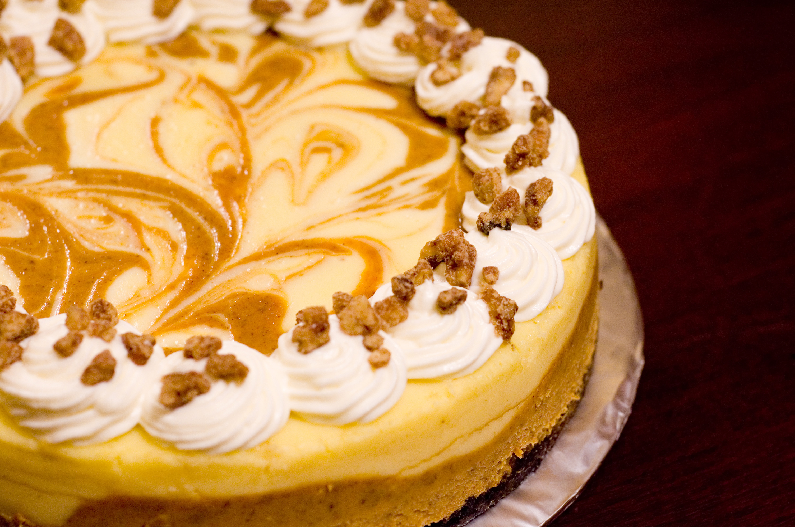

Marbled Pumpkin Cheesecake

Ah this recipe, an old family recipe that I hold close to my heart.
This creamy, luscious, gorgeous treat will have you falling in love with each bite.
From the cake crust made from crushed gingersnap cookies. To the delicous filling made from
pumpkin, cream cheese, and of course pumpkin.
The recipe isn't hard to make at all. Just a few thinks from the old grcery store and you'll
be able to enjoy this delectiable dish. Please look to the "Instruction" section of the page to learn what to do
and look at the "Ingredients" section on what to get to make it.
Ingredients
- 1 1/2 cups Crushed Gingersnap Cookies
- 1/2 Cups Finely CHopped Pecans
- 1/3 Cup Butter, Melted
- 2 (8oz) Packages Cream Cheese, Softened
- 3/4 cups White Sugar, Divided
- 1 Teaspoon Vanilla Extract
- 3 Eggs
- 1 Cup Canned Pumpkin
- 3/4 Teaspoon Ground Cinnamon
- 1/4 Teaspoon Ground Nutmeg
Steps
- Preheat oven to 350 degrees F (175 degrees C).
In a medium bowl, mix together the crushed gingersnap cookies, pecans, and butter.
Press into the bottom, and about 1 inch up the sides of a 9 inch springform pan.
Bake crust 10 minutes in the preheated oven. Set aside to cool.
- In a medium bowl, mix together the cream cheese, 1/2 cup sugar, and vanilla just until smooth.
Mix in eggs one at a time, blending well after each. Set aside 1 cup of the mixture.
Blend 1/4 cup sugar, pumpkin, cinnamon, and nutmeg into the remaining mixture.
- Spread the pumpkin flavored batter into the crust, and drop the plain batter by spoonfuls onto the top.
Swirl with a knife to create a marbled effect.
- Bake 55 minutes in the preheated oven, or until filling is set.
Run a knife around the edge of the pan.
Allow to cool before removing pan rim.
Chill for at least 4 hours before serving.
Return to main page.